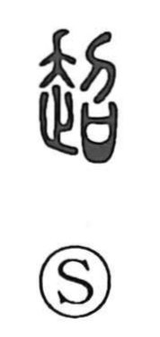

超

Uncategorized
Kun: koeru, kosu | On: cho
to surpass ・ to exceed ・ transcend ・ super-
Explanation
超 is a phono-semantic character: 走 provides the sense of forward motion, while 召 serves as the phonetic, signaling the On reading cho. A cognate with the same phonetic, 迢, means “far, distant,” lending 超 the nuance of being far beyond. The Shuowen defines it as “to leap,” and from the image of springing up or flying over an obstacle arise the meanings “to get over, surpass, cross.” Accordingly, it appears in compounds such as 超越, 超絶, 超人, 超然, and 超脱 to express transcendence—going beyond the ordinary—and, by extension, “to surpass by far.”